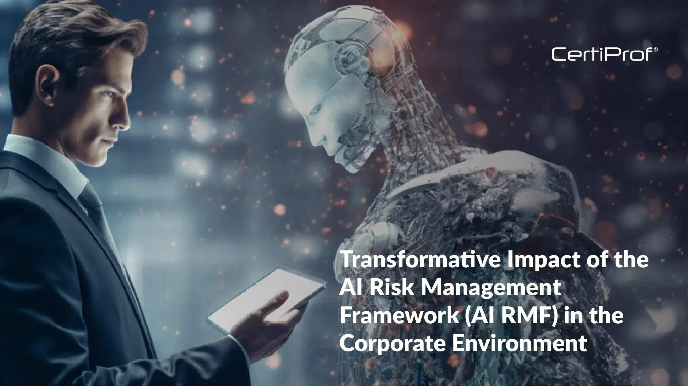

|
|
INFO GRAPHIC NEWS |
| Home | Article | Categories | Contact |
Ai Established:Author: Jack | Date: October 12, 2025  Artificial intelligence (AI) is the ability of machines to simulate human intelligence, allowing them to perform tasks like learning, problem-solving, and decision-making. AI systems use algorithms and data to recognize patterns, understand language, and complete tasks without explicit instructions for every step. It is used in many applications, from virtual assistants and search engines to medical diagnosis and autonomous vehicles, and can help automate processes and improve accuracy. |
Future AI:Author: Arun | Date: October 13, 2025  Artificial intelligence (AI) is the ability of machines to simulate human intelligence, allowing them to perform tasks like learning, problem-solving, and decision-making. AI systems use algorithms and data to recognize patterns, understand language, and complete tasks without explicit instructions for every step. It is used in many applications, from virtual assistants and search engines to medical diagnosis and autonomous vehicles, and can help automate processes and improve accuracy. |
AiAuthor: Thasni | Date: October 13, 2025  Artificial intelligence (AI) is the ability of machines to simulate human intelligence, allowing them to perform tasks like learning, problem-solving, and decision-making. AI systems use algorithms and data to recognize patterns, understand language, and complete tasks without explicit instructions for every step. It is used in many applications, from virtual assistants and search engines to medical diagnosis and autonomous vehicles, and can help automate processes and improve accuracy. |
Technology: AI is eliminating jobsAuthor: Aneesh | Date: October 12, 2025 Artificial intelligence isn’t just coming for the factory workers or call centres anymore, it’s starting to reshape the American job market as a whole. A new government-backed report suggests that millions of roles could be swept up in the coming wave of automation, and the group taking the biggest hit might not be who you think. It highlights a wide range of at-risk sectors, with everything from customer service and accounting to education and fast food all under threat. |
|
© 2025 ALAMY. All rights reserved. Privacy Policy | Terms of Use | About Us |